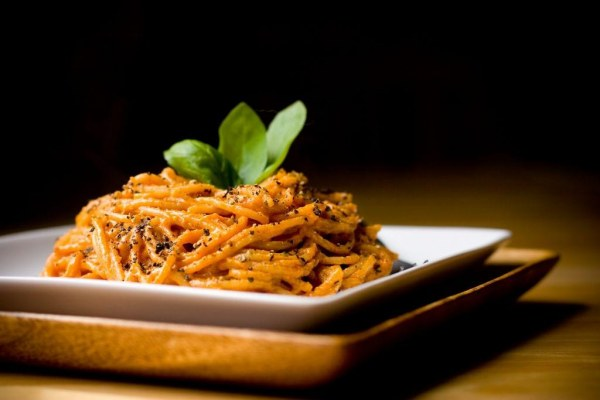

Romige tomaat-basilicumpasta

Ingrediënten
- 5 grote tomaten
- 100 g cashewnoten
- 2 el tomatenpuree
- 100 ml water
- 4 el olijfolie
- 4 - 8 teentjes fijngesnipperde knoflook
- 500 g spaghetti
- 4 - 6 el rode wijn
4 - 6 el rode wijn
- 2 - 3 tl zwarte peper en zout
- 2 handvol basilicum
Bereiding
- Breng een grote pot met water aan de kook voor de spaghetti. Snijd het hart uit de tomaten en snijd ze in grove stukken. Mix de tomaten fijn, samen met de cashewnoten, tomatenconcentraat en wat water.
- Kook nu de spaghetti.
- Verhit in een bakpan op een laag vuurtje de olijfolie, bak hierin de knoflook lichtjes aan (lichtgeel, niet bruinig!) en giet de fijngemixte tomatensaus in de pan. Zet het vuur hoger en laat de saus 4-5 min zachtjes sudderen. Roer nu de wijn onder de saus. Breng op smaak met peper en zout.
- Giet de pasta af en roer ze onder de tomatensaus in de bakpan, samen met de verse basilicum. Breng nog een laatste maal op smaak met zwarte peper en serveer.